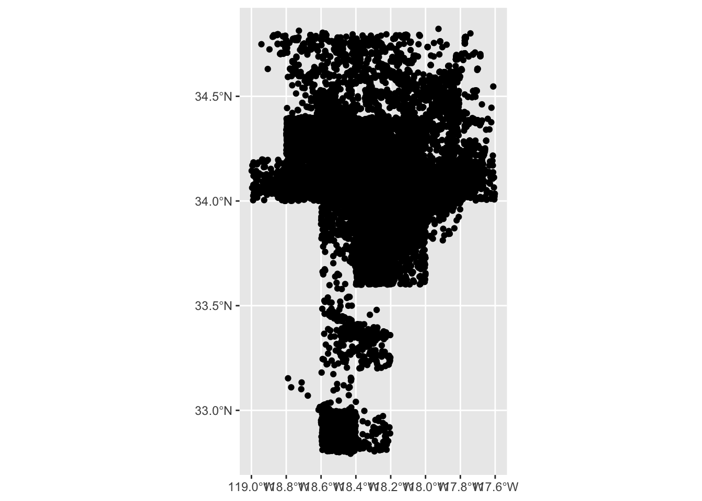
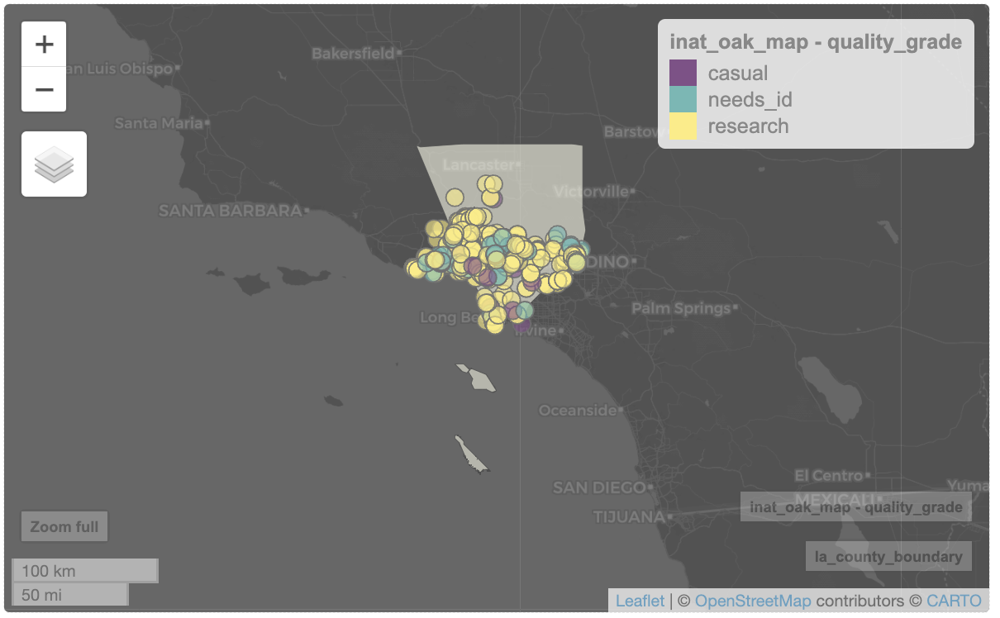
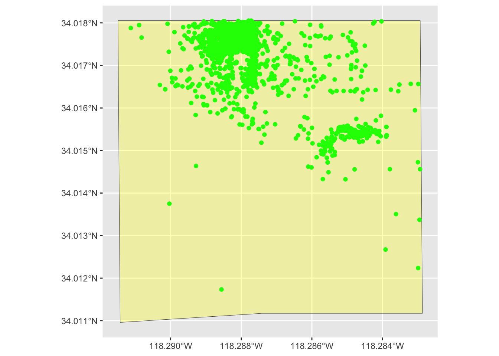
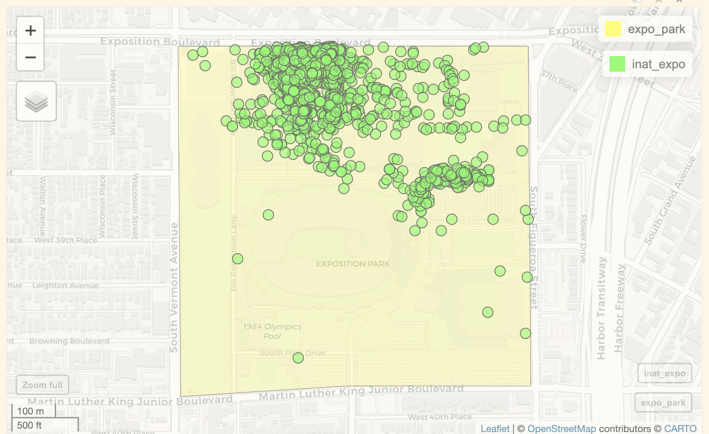

library(dplyr) # manipulate data
library(ggplot2) # create data visualizations
library(sf) # handle geospatial data
library(mapview) # create interactive mapsCreating maps
Questions
- How do we create maps using R?
Objectives
- Learn how to plot iNaturalist observations on a map
- Learn how to create static maps with ggplot2
- Learn how to create interactive maps with mapview
Geographic concepts
Geographic data is data that has a location.
There are various file formats for geographic data. Shape files for GIS applications, KML for Google maps, geojson for web applications.
Earth is a 3D sphere. Maps are 2D representation of a 3D sphere. Map projections are ways to represent a sphere as a flat surface. A coordinate reference system (CRS) defines how the two-dimensional, projected map relates to real places on the earth.
Many organizations offer geospatial data that people can use for free. Los Angeles City has a portal for geospatial data: https://geohub.lacity.org
Mapping iNaturalist data
iNaturalist data includes latitude and longitude, which means we can put the observations in a map. There are several packages to create maps. We will use ggplot and mapview packages.
Main steps:
- Load iNaturalist data
- Add geometry column to iNaturalist data frame
- Use
filter(),select(),andmutate(), to get the rows and columns we want. - Create map.
loading R packages
Read data from the cleaned iNaturalist observation file.
inat <- read.csv('data/cleaned/cnc-los-angeles-observations.csv')Use names() to see all the column names. “latitude” and “longitude” are the column names we need.
names(inat) [1] "id" "observed_on"
[3] "time_observed_at" "user_id"
[5] "user_login" "user_name"
[7] "created_at" "updated_at"
[9] "quality_grade" "license"
[11] "url" "image_url"
[13] "sound_url" "tag_list"
[15] "description" "captive_cultivated"
[17] "latitude" "longitude"
[19] "positional_accuracy" "public_positional_accuracy"
[21] "geoprivacy" "taxon_geoprivacy"
[23] "coordinates_obscured" "scientific_name"
[25] "common_name" "iconic_taxon_name"
[27] "taxon_id" "taxon_kingdom_name"
[29] "taxon_phylum_name" "taxon_class_name"
[31] "taxon_order_name" "taxon_family_name"
[33] "taxon_genus_name" "taxon_species_name"
[35] "taxon_subspecies_name" "threatened"
[37] "establishment_means" We use the sf package to add geographic data to our data frame. st_as_sf() from sf package will take the longitude and latitude and add a geometry column that we can use for mapping.
- We pass in longitude and latitude columns to
coordsargument. Must wrap longitude and latitude in quotes. crsis coordinate reference system. 4326 is code for the WGS 84 CRS. WGS 84 is a commonly used CRS. WGS 84 is used in GPS applications.remove=FALSEwill keep the longitude and latitude columns in the data frame
temp <- inat %>%
st_as_sf(coords = c("longitude", "latitude"), crs = 4326, remove=FALSE)use names() to get a list of all the columns. A geometry column was added.
names(temp) [1] "id" "observed_on"
[3] "time_observed_at" "user_id"
[5] "user_login" "user_name"
[7] "created_at" "updated_at"
[9] "quality_grade" "license"
[11] "url" "image_url"
[13] "sound_url" "tag_list"
[15] "description" "captive_cultivated"
[17] "latitude" "longitude"
[19] "positional_accuracy" "public_positional_accuracy"
[21] "geoprivacy" "taxon_geoprivacy"
[23] "coordinates_obscured" "scientific_name"
[25] "common_name" "iconic_taxon_name"
[27] "taxon_id" "taxon_kingdom_name"
[29] "taxon_phylum_name" "taxon_class_name"
[31] "taxon_order_name" "taxon_family_name"
[33] "taxon_genus_name" "taxon_species_name"
[35] "taxon_subspecies_name" "threatened"
[37] "establishment_means" "geometry" use select() to pick which columns to use.
inat_map <- inat %>%
st_as_sf(coords = c("longitude", "latitude"), crs = 4326, remove=FALSE) %>%
select(id, user_login, common_name, scientific_name, observed_on, url, longitude, latitude, geometry, quality_grade) Use dim() to show the number of rows and columns. There are over 191K rows.
dim(inat_map)[1] 191638 10Let’s get the observations for ‘Quercus agrifolia’ aka Coast Live Oak.
inat_oak <- inat_map %>%
filter(scientific_name == 'Quercus agrifolia')Use dim() to get number of observations. About 700 rows.
dim(inat_oak)[1] 711 10static map
ggplot is a data visualization package. We can use ggplot to create static maps. geom_sf() will use plot each observation using the information in the geometry column.
Let’s create a map for all the observations.
ggplot() +
geom_sf(data = inat_map) 
Let’s create a map for Coast Live Oak observations.
ggplot() +
geom_sf(data = inat_oak) 
We can set the color of the map marker using color argument.
ggplot() +
geom_sf(data = inat_oak, color='green') 
We can also set the color of the marker by using the values of a given column using mapping=aes(color=<column_name>).
Let’s use ‘quality_grade’ to set the color of the map markers.
ggplot() +
geom_sf(data = inat_oak, mapping=aes(color=quality_grade)) 
interactive map
We can use mapview package to create interactive maps where you can zoom in and out.
There are over 191K rows in inat_map data frame. Creating an interactive map with 191K rows will be very slow. Do not use mapview if there are lots of rows.
Let’s create interactive map for ‘Coast Live Oak’.
When you click on observation, all the fields that were passed into select() will be displayed in a popup.
mapview(inat_oak)
Use color to set the color of the border. User col.regions to set the color of the fill.
mapview(inat_oak, color='black', col.regions='green')
We can also set the color of the marker by using the values of a given column using zcol=<column_name>.
Let’s use quality_grade to set the color of the map markers.
mapview(inat_oak, zcol='quality_grade')
Add object boundaries
Let’s add the boundaries for LA county to the map.
Shape files is a file format for geographic information system software. I downloaded the LA county boundaries as a Shape file from https://geohub.lacity.org/datasets/lacounty::county-boundaries/explore
We will use read_sf() from sf package to read the Shape file.
la_county <- read_sf('data/raw/County_Boundary/County_Boundary.shp')Let’s create a map with LA County and oak observations.
ggplot() +
geom_sf(data = la_county) +
geom_sf(data = inat_oak) 
mapview(la_county) +
mapview(inat_oak) 
Exercise 1
Create a map for one species. Include the boundaries for LA County.
- use
filter()to select observations for one species - create either a static or interactive map.
inat_finch <- inat_map %>%
filter(common_name == 'House Finch')
mapview(la_county) +
mapview(inat_finch)Exploring iNaturlist data in specific area
Let’s look for all iNaturalist observations made in Exposition Park.
I used this Draw map boundaries to draw and download the boundaries of Exposition Park. The file is in geojson format.
Let’s use st_read() to read a geojson file. Use st_transform to set the crs
expo_park <- st_read('data/raw/boundaries_expo_park_area.geojson') %>%
st_transform(4326)Reading layer `boundaries_expo_park_area' from data source
`/Users/wyk/Development/science/city_nature_challenge/NHMLA_workshop/CNC-coding-workshop_quarto/lessons/data/raw/boundaries_expo_park_area.geojson'
using driver `GeoJSON'
Simple feature collection with 1 feature and 2 fields
Geometry type: POLYGON
Dimension: XY
Bounding box: xmin: -118.2915 ymin: 34.01096 xmax: -118.2829 ymax: 34.01806
Geodetic CRS: WGS 84First create map of Expo Park.
ggplot() +
geom_sf(data = expo_park) 
mapview(expo_park) 
We want to get observation inside Expo Park. When we want to combine two geospatial datasets, we need to make sure the CRS are the same.
st_crs() from sf returns the CRS for a data frame.
st_crs(expo_park)Coordinate Reference System:
User input: EPSG:4326
wkt:
GEOGCRS["WGS 84",
ENSEMBLE["World Geodetic System 1984 ensemble",
MEMBER["World Geodetic System 1984 (Transit)"],
MEMBER["World Geodetic System 1984 (G730)"],
MEMBER["World Geodetic System 1984 (G873)"],
MEMBER["World Geodetic System 1984 (G1150)"],
MEMBER["World Geodetic System 1984 (G1674)"],
MEMBER["World Geodetic System 1984 (G1762)"],
MEMBER["World Geodetic System 1984 (G2139)"],
ELLIPSOID["WGS 84",6378137,298.257223563,
LENGTHUNIT["metre",1]],
ENSEMBLEACCURACY[2.0]],
PRIMEM["Greenwich",0,
ANGLEUNIT["degree",0.0174532925199433]],
CS[ellipsoidal,2],
AXIS["geodetic latitude (Lat)",north,
ORDER[1],
ANGLEUNIT["degree",0.0174532925199433]],
AXIS["geodetic longitude (Lon)",east,
ORDER[2],
ANGLEUNIT["degree",0.0174532925199433]],
USAGE[
SCOPE["Horizontal component of 3D system."],
AREA["World."],
BBOX[-90,-180,90,180]],
ID["EPSG",4326]]Let’s use st_crs() to check if the CRS for the iNaturalist data and the Expo Park are the same. == checks if two things are equal.
st_crs(expo_park) == st_crs(inat_map)[1] TRUEst_intersects() from sf can tell us which points are inside a boundary. st_intersects() returns number of items in each row of inat_map that is inside expo_park.
st_intersects(inat_map, expo_park)Sparse geometry binary predicate list of length 191638, where the
predicate was `intersects'
first 10 elements:
1: (empty)
2: 1
3: (empty)
4: (empty)
5: (empty)
6: (empty)
7: (empty)
8: (empty)
9: (empty)
10: (empty)We can use lengths(...) > 0 to return TRUE/FALSE for every row in inat_map that has 1 or more items that inside expo_park
lengths(st_intersects(inat_map, expo_park)) > 0inat_map[..., ] selects all rows where a condition is true. In this case, we want all observations from inat_map that are inside expo_park.
inat_expo <- inat_map[lengths(st_intersects(inat_map, expo_park)) > 0, ]Use dim() to get row and column count. 191K observations in LA county, over 2900 observation in Expo Park.
dim(inat_map)[1] 191638 10dim(inat_expo)[1] 2964 10Let’s create map of all observations in Expo Park.
ggplot() +
geom_sf(data = expo_park) +
geom_sf(data = inat_expo) 
mapview(expo_park) +
mapview(inat_expo) 
There are various ways to change the appearance of a map.
For ggplot(), use fill() to set color and alpha() to set opacity for a polygon. Use color() to set color for points.
ggplot() +
geom_sf(data = expo_park, fill=alpha("yellow", .3)) +
geom_sf(data = inat_expo, color="green") 
For mapview(), use col.regions to set color, and alpha.regions to set opacity.
mapview(expo_park, col.regions="yellow", alpha.regions=0.3) +
mapview(inat_expo, col.regions="green") 
Exercise 2
Create a map for all CNC observations that are inside of a specific area
- Used Draw map boundaries to draw and download an area that you are interested in.
- Save the file to the
data/rawdirectory. - use
st_readto read your boundary data. inat_mapis a data frame with all CNC observations- use
inat_map[lengths(st_intersects(inat_map, your_boundary)) > 0, ]to get observations inside a boundary
usc_boundary <- st_read('data/raw/boundaries_usc.geojson') %>%
st_transform(4326)
inat_usc <- inat_map[st_intersects(inat_map, usc_boundary) %>% lengths > 0, ]
mapview(usc_boundary) +
mapview(inat_usc)Exporting maps
We can export the maps created with ggplot and mapview as image files.
static maps
Assign the map created by ggplot to an object. Then run ggsave() to save our map. The first argument is the path to the file we want to save, including the correct file extension. You can save as jpg, pdf, tiff, png. Next, we tell it the name of the plot object we want to save. We can also specify things like the width and height of the plot in inches.
# create map
my_map <- ggplot() +
geom_sf(data = expo_park) +
geom_sf(data = inat_expo)
# save map
ggsave(filename = 'results/expo_park_observations.jpg', plot = my_map, height = 6, width = 8)interactive map
Assign the map created by mapview to an object. Then run mapshot() to save our map. The first argument is map you want to to save. The second argument is the path to the file we want to save, including the correct file extension. You can save as jpg, pdf, or png.
# create map
my_map_2 <- mapview(expo_park) +
mapview(inat_expo)
# save map
mapshot(my_map_2, file = 'results/expo_park_observations_3.jpg')